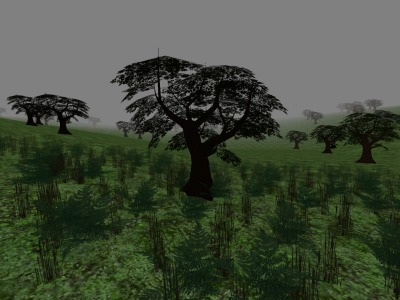
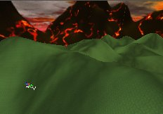

UDN
Search public documentation:
TerrainTutorial
日本語訳
한국어
Interested in the Unreal Engine?
Visit the Unreal Technology site.
Looking for jobs and company info?
Check out the Epic games site.
Questions about support via UDN?
Contact the UDN Staff
한국어
Interested in the Unreal Engine?
Visit the Unreal Technology site.
Looking for jobs and company info?
Check out the Epic games site.
Questions about support via UDN?
Contact the UDN Staff
Terrain
Document Summary: A table of contents for the Terrain documents. Document Changelog: Last updated by Jason Lentz (DemiurgeStudios?) to separate into smaller documents for the 2110 build. Original author was Jason Lentz (DemiurgeStudios?).Introduction
Welcome to the Terrain Tutorial. This document guides you to each of the different sections on how to go about creating and modifying your Terrain. The sections are arranged starting with the initial creation of your Terrain to adding detail and the finishing touches. To jump to a page directly, just click on one of the following links:Creating Terrain
 This section explains how to go about creating a Terrain starting from an empty level. The subsections of this document include...
CreatingTerrain
This section explains how to go about creating a Terrain starting from an empty level. The subsections of this document include...
CreatingTerrain - Preparing the map for Terrain
- Creating a Basic Terrain
- The TerrainMap
- Adding a Texture
- Terrain Generator
Editing Terrain Maps
 This section shows how to use the various Tools in the Terrain Editor to modify the TerrainMap. The following tools are described in detail...
EditingTerrainMaps
This section shows how to use the various Tools in the Terrain Editor to modify the TerrainMap. The following tools are described in detail...
EditingTerrainMaps - Vertex Editing Tool
- Selection Tool
- Painting Tool
- Smoothing Tool
- Noise Tool
- Flatten Tool
- Visibility Tool
- Edge Turning Tool
Editing Terrain Layers
 This section includes a more detailed explanation of what a TerrainMap is and how it is manifested in the level. It also describes how to create and alter the separate Layers within the Terrain. Here are the specific sections that are found within this document:
EditingTerrainLayers
This section includes a more detailed explanation of what a TerrainMap is and how it is manifested in the level. It also describes how to create and alter the separate Layers within the Terrain. Here are the specific sections that are found within this document:
EditingTerrainLayers - TerrainInfo
- Layer Hierarchy
- Layers
- Creating a New Layer
- Layer Properties
- TextureMap Axis
- Editing AlphaMaps with the Terrain Editing Tools
- Fake DisplacementMaps
Creating DecoLayers

Here you will learn how to create your own DecoLayers. These are useful for populating your map with StaticMeshes quickly with a random yet controlled. The bulk of the document focuses on describing each of the properties and how to use them. Below are the major sections of this document. CreatingDecoLayers- Creating a DecoLayer
- DecoLayer Properties
- AlignToTerrain
- ColorMap
- DensityMap
- DensityMultiplier
- DisregardTerrainLighting
- DrawOrder
- FadeOutRadius
- LitDirectional
- MaxPerQuad
- RandomYaw
- ScaleMap
- ScaleMultiplier
- Seed
- ShowOnInvisibleTerrain
- ShowOnTerrain
- StaticMesh
Additional Terrain Tips
 ==>
==> 
This document has several ways in which you can greatly improve the appearance as well as the efficiency of your Terrain. Not all of the tips are part of the Terrain Editing tools, but they will all help you to create the best Terrain you can. Here are some of the sections you will find in this document: AdditionalTerrainTips- Saving and Testing the Map
- Terrain Statistics
- Adding a SkyBox
- Adding SunLight
- DistanceFog
- Multiple TerrainInfos, Multiple Zones